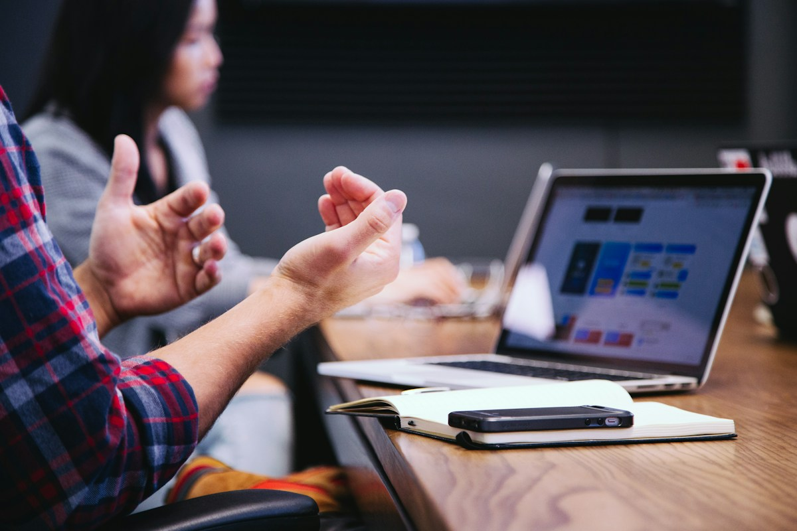
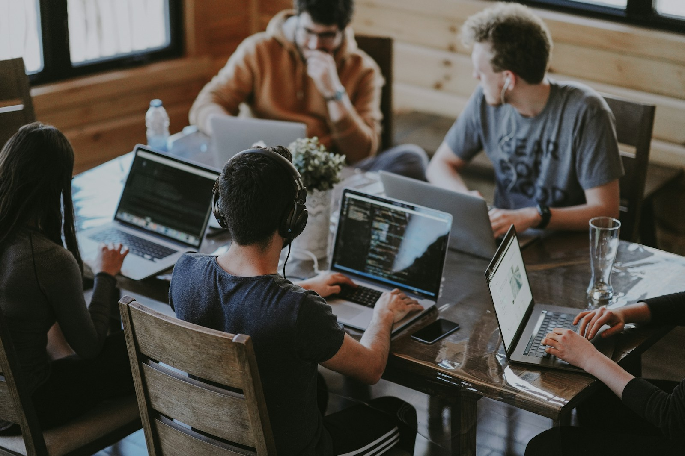

LOCAL × YOUTH地域の「次」を、一緒につくる。活動写真／課題／共創相手／進捗
若者と社会をつなぎ、共に考え、挑戦し、
新しいMOVEを生み出すプラットフォーム。

仮コピーとグラフィック。訴求軸を比較するためのHEROです。
若者 × 企業 × 行政 × 地域。
出会いから対話へ。アイデアから共創へ。
実際の参加者の言葉＋名前・関わり方を掲載する想定。現在はコピー例。

LOCAL × YOUTH地域の「次」を、 BUSINESS × YOUTH異なる視点から、
BUSINESS × YOUTH異なる視点から、事例の中に確認済みの実績・成果を添えて、熱量と実行力を伝える。
対象者／参加方法／費用／イベント概要
NMJを知った人が、今参加できる機会へ進む入口。
既存メディアワイヤーを見る ↗人物写真本人の名前／役割／言葉
若者・運営・共創パートナー
写真と言葉の配置案。写真はイメージで、NMJ本人の写真・発言は未掲載です。
活動の背景、葛藤、出会い、変化。
写真＋本人の言葉＋プロジェクトへの接点を届ける。
SNSは日々の接点として、STORIESとフッターからつなぐ。
企業・行政・地域の共創相談へ
二つのCTAの配置案。フォーム・申し込みは実装していません。
写真はデザイン検討用のイメージです。NMJの実際の活動・メンバーを示すものではありません。Images: Unsplash / 写真の出典